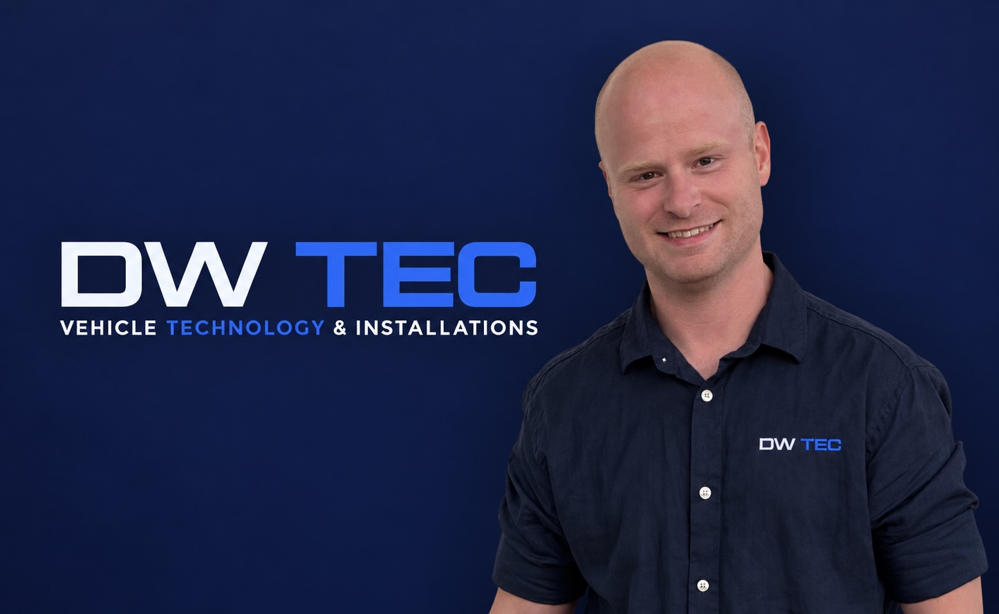

Experience behind every installation.
DW TEC is a mobile vehicle technology and installation service based near Skegness.
Hi, I'm Daniel.
My background started as a mechanic in the Army and later included agricultural engineering, followed by nearly nine years working with vehicle technology and installations.
Over the years I've carried out thousands of installations including dashcams, stereos, reversing cameras and hands-free systems across a wide range of vehicles — from cars more than 20 years old to brand-new vehicles just days out of the showroom.
Alongside the practical side, I'm studying part-time for a degree in Computing & IT. That combination of hands-on vehicle experience and an interest in technology is a big part of what DW TEC is about.
The aim is simple: straightforward advice, careful work and installations that look and feel as close to factory-fitted as reasonably possible.
